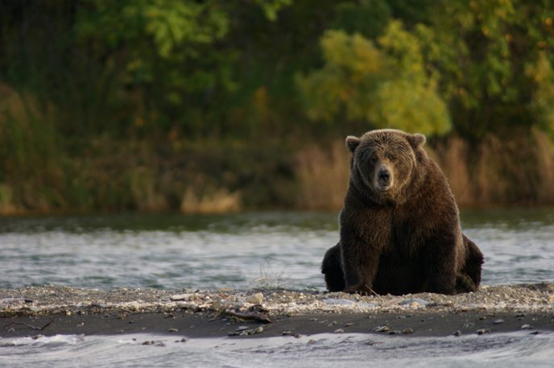
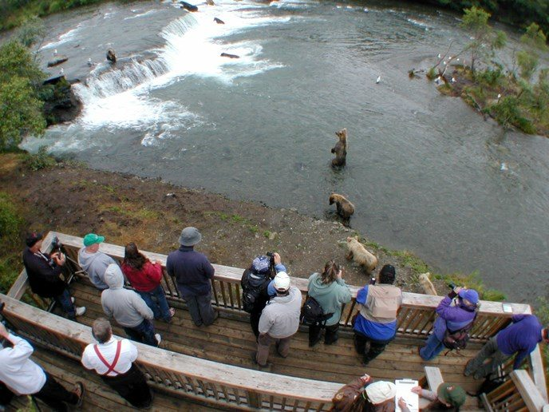

NPS / David Jacob
NPS / David JacobDAY 6
卡特邁
Katmai
看熊的重點不只是站上瀑布平台，而是讀懂河流、食物與季節，給動物足夠的空間。
PLAN / OBSERVE / EXPERIENCE
把這座公園玩得更明白
行程安排、現場觀察與旅行經驗，放在一起閱讀。
怎麼把一天留給看熊
以 Anchorage 當日往返產品為例，清晨出發，經航空轉乘到 Brooks Camp，再於傍晚回城。地面時間比整趟活動時間短，因此抵達後先完成安全說明、存放食物，接著按 ranger 建議選觀察地點。
不要替每個平台排死固定分鐘。熊可能阻擋步道，熱門平台可能候位；回程集合前要有真正的緩衝，不能以地圖上的步行時間當作當天必然花費。
生態故事：鮭魚、河流與熊
鮭魚是理解 Brooks River 看熊體驗的重要線索。熊會隨食物、河況與季節改變位置；瀑布平台是其中一個觀看點，而不是把所有動物固定在同一處的舞台。
除了抓魚，也可以看熊如何等待、移動、進食或照顧幼熊。Lower River、Riffles 和 Brooks Falls 的視角不同，當天由現場資訊決定在哪裡花較多時間。
簡單走法與現場規則
先問 ranger 當天熊主要在哪裡，再選 Lower River 與通往瀑布的平台路線。食物和帶氣味物品依指示存放，只在指定區域進食，不能拿著午餐沿步道邊走邊吃。
任何時候都讓熊有通行空間。若動物靠近或擋路，依 ranger 指示等待或退開；看熊不是追蹤牠們到更近的位置。
行程安排心得：緩衝日才是真正的備案
這條九日路線把看熊放在公路段之前，讓下一天能因天候調整。退款、成功改期和隔天還有空位是三件不同的事，訂位時分別確認。
若 Day 7 改作補飛，當晚仍回 Anchorage；Copper Center 必須順延或刪減。保留所有景點時就增加一天，而不是把晚上回城後接成長途駕駛。
全部為阿拉斯加當地時間。「班表／業者」為官方所列時間；「建議／估時／示範」是本行程預留的活動與移動時間。火車頁面已更新到 2027 夏季；公園接駁仍有 2026 版本，請核對出遊年度。不同船班請依票券替換；本表採 12:00 Seward 船班。
DAY 06
Katmai｜Brooks Camp 看熊一日
以 Katmai Air 的 Anchorage 當日往返產品作交通例子。業者公布出發與回城時間範圍，Brooks Camp 的實際抵離時間仍須以配班為準；以下園內時段是示範分配。
今晚住宿區域：Anchorage
- 約 06:00–07:00示範
指定基地集合、報到
依最終通知倒推早餐與住宿接送；確認集合基地地址，不要直接前往主航廈。

Brooks River 附近湖岸的棕熊 · NPS / R. Wood · 照片來源 Brooks Camp｜先了解規則再看熊
這裡沒有從 Anchorage 直接開車可到的公路。進營地後先接受熊安全說明，再依指示存放食物。熊與人共用這片環境，通行有時必須等待。
看展與散步以當天開放區域為準，保留前往下一站的交通時間。
- 07:00–08:00 間業者範圍
Anchorage 起飛，經 King Salmon 銜接
此產品包含到 Brooks 的往返航空交通；轉機與水上飛機安排由業者確認，兩段之間不要自行安排其他活動。
Brooks Camp｜先了解規則再看熊
這裡沒有從 Anchorage 直接開車可到的公路。進營地後先接受熊安全說明，再依指示存放食物。熊與人共用這片環境，通行有時必須等待。
看展與散步以當天開放區域為準，保留前往下一站的交通時間。
- 約 10:00–10:45示範
抵達 Brooks Camp、熊安全說明
實際抵達可能較早或較晚。先完成必須的安全說明、存放食物與有氣味物品，再開始活動。
Brooks Camp｜先了解規則再看熊
這裡沒有從 Anchorage 直接開車可到的公路。進營地後先接受熊安全說明，再依指示存放食物。熊與人共用這片環境，通行有時必須等待。
看展與散步以當天開放區域為準，保留前往下一站的交通時間。
- 約 10:45–11:30示範
Lower River 看熊況
先問 ranger 當天熊在哪裡、平台是否排隊。看熊路線可調整，但不要追著熊移動。
Brooks River 附近湖岸的棕熊 · NPS / R. Wood · 照片來源 Brooks River｜看熊要看食物與水域
熊會跟著鮭魚與食物位置移動，Lower River、Riffles 和 Brooks Falls 都值得按現場熊況分配時間。經典瀑布畫面不代表每天都能看到許多熊同時抓魚。
現場看什麼：Lower River、Riffles 與瀑布提供不同視角。觀察熊等待、移動與覓食的方式；當天魚況和季節會改變熊的位置。平台可能排隊，熊也可能暫時擋住步道。
- 約 11:30–12:15示範
指定區域吃午餐、上廁所
帶簡單食物可節省用餐時間；只在允許進食的位置吃，食物不要帶著邊走邊吃。
- 約 12:15–15:00示範
Brooks Falls Trail、Riffles、瀑布平台
把這一整段留給步行與看熊，平台候位和熊阻擋通行都算在內。不保證每處都能停留相同時間。

Brooks Falls 觀熊平台與河中的棕熊 · NPS / R. Wood · 照片來源 Brooks River｜看熊要看食物與水域
熊會跟著鮭魚與食物位置移動，Lower River、Riffles 和 Brooks Falls 都值得按現場熊況分配時間。經典瀑布畫面不代表每天都能看到許多熊同時抓魚。
現場看什麼：Lower River、Riffles 與瀑布提供不同視角。觀察熊等待、移動與覓食的方式；當天魚況和季節會改變熊的位置。平台可能排隊，熊也可能暫時擋住步道。
- 約 15:00–16:00示範
回 Lower River、取物、返回集合區
以業者指定的離營集合時間往前抓至少一小時緩衝；若班機更早，必須縮短前段看熊，不是照表走到最後。
Brooks River 附近湖岸的棕熊 · NPS / R. Wood · 照片來源 回程緩衝為什麼重要
熊活動可能暫時阻擋路線。提前回到集合區比多拍幾張照片重要；航空接駁還要配合轉機，不能只看自己的步行速度。
看展與散步以當天開放區域為準，保留前往下一站的交通時間。
- 約 16:00–18:30示範
離開 Brooks Camp、轉乘回 Anchorage
離營與轉機時間未固定，依當日配班。請保持集合訊息可取得，勿依網站示範時間自行晚到。
- 18:30–19:00 間業者範圍
抵達 Anchorage
Katmai Air 公布的回城時間範圍。今天留在 Anchorage 吃晚餐與休息，不再接四、五小時的 Copper Center 長途駕駛。
Day 7 原本保留作緩衝。若能改到 Day 7 看熊，當晚仍住 Anchorage；Copper Center 段順延一天，或刪去，不能把原本 Day 7 下午的自駕硬接在晚間回城後。
不要沿用這張飛行時間表。用你訂到的起飛、離營集合與回城時間替換交通列，再按比例縮短或拉長園內看熊。
班表與景點資料
NPS｜Brooks Camp 與安全說明 ↗NPS｜看熊與食物季節 ↗Alaska State Parks｜Matanuska 觀景與 Edge Nature Trail ↗Cabin Nite｜場次、訂位、餐飲與接駁 ↗Fly Denali｜冰川飛行、時長與班次 ↗Fly Denali｜接送與天候問題 ↗Reserve Denali｜出發前 48 小時查詢時刻 ↗Alaska Railroad｜列車班表（目前為 2027 夏季） ↗Alaska Railroad｜報到規定 ↗Kenai Fjords Tours｜鐵路接駁與船班 FAQ ↗Alaska Railroad｜5.5 小時遊船產品 ↗NPS｜Denali 巴士時長與預約 ↗NPS｜Denali 免費接駁班表 ↗Katmai Air｜Brooks Falls 當日往返 ↗照片：NPS / David Jacob · 來源